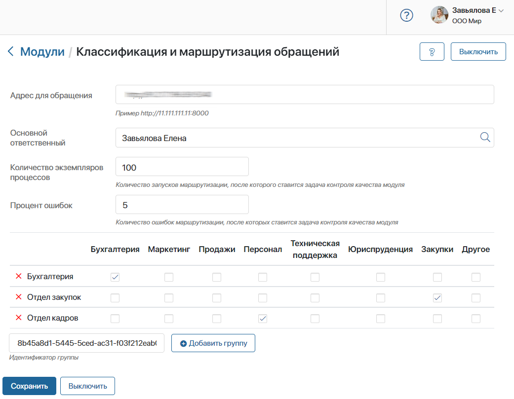

Решение помогает наладить маршрутизацию обращений, полученных от клиентов и партнёров из электронной почты, мессенджеров или с сайта компании, для их дальнейшей обработки. При помощи искусственного интеллекта в тексте сообщений распознаются тематика, например, бухгалтерия или маркетинг, и эмоциональная окраска: нейтральная, положительная или отрицательная.
Определите группы сотрудников, которые будут обрабатывать обращения на разные тематики. По умолчанию сообщения классифицируются по следующим темам: Бухгалтерия, Маркетинг, Продажи, Персонал, Техническая поддержка, Юриспруденция, Закупки и Другое. Также существует возможность добавить пользовательские классы, которые используются в вашей компании.
В ходе бизнес-процесса группа сотрудников получит задачу ознакомиться с текстом сообщения. Специалист сможет взять её в работу и оперативно ответить клиенту или отметить запрос, как не относящийся к его зоне ответственности. В этом случае ответственного необходимо определить вручную. Модель ИИ будет запоминать выбор сотрудника и обучаться в моменте.
В состав решения входят:
- раздел Маршрутизация обращений с преднастроенным приложением Отчеты по маршрутизации. Здесь в виде отдельных элементов хранятся задачи по определению ответственного сотрудника вручную. На форме каждого элемента вы сможете просмотреть текст сообщения, а также тематику и тональность, определённые моделью ИИ автоматически и выбранные сотрудником вручную;
- модуль Классификация и маршрутизация обращений. В его настройках задаются бизнес‑правила, по которым обрабатываются запросы клиентов.
После установки решения в дизайнер бизнес-процессов добавится специальный графический элемент Классификация обращения и отправка исполнителю. Вы сможете разместить его на схеме любого процесса компании и внедрить автоматическую маршрутизацию обращений клиентов с помощью модели ИИ.
Чтобы передать текст сообщения в блок Классификация обращения и отправка исполнителю, в бизнес‑процессе можно использовать графический элемент Задача. Тогда пользователь будет вносить текст сообщения в поле на форме задачи вручную.
Также можно добавить на схему блок Скрипт и составить код на языке TypeScript. При его исполнении запросы клиентов, например, с сайта компании, передаются в систему ELMA365.
Кроме того, вы можете настроить работу решения вместе с платформой для поддержки клиентов и партнёров ELMA365 Service. В этом случае обращения по разным темам будут поступать в одну линию, а затем распределяться автоматически и направляться сотруднику, который сможет решить запрос.
С примером использования блока можно ознакомиться в статье «Классификация обращения и отправка исполнителю».
Установка решения и подключение модуля
Чтобы установить модель искусственного интеллекта в систему, выполните следующие действия:
- На главной странице, в левом меню нажмите на значок
 . В открывшемся окне Настройка Разделов и Решений перейдите на вкладку Решения, нажмите кнопку + Добавить решение и выберите Скачать.
. В открывшемся окне Настройка Разделов и Решений перейдите на вкладку Решения, нажмите кнопку + Добавить решение и выберите Скачать. - В открывшемся каталоге ELMA365 Store выберите решение Классификация и маршрутизация обращений и установите его.
После загрузки решения в систему добавятся раздел Маршрутизация обращений и модуль Классификация и маршрутизация обращений. Поскольку решение является платным, его нужно активировать.
- Перейдите в раздел Администрирование > Управление лицензиями и напротив названия решения нажмите кнопку Активировать.
- Подключите и настройте модуль. Для этого перейдите в раздел Администрирование > Модули > Классификация и маршрутизация обращений.

- На странице модуля укажите необходимые настройки. При заполнении полей не забудьте сохранять настройки каждый раз, если вы переходите в другие разделы системы:

- Адрес для обращения — укажите IP и порт сервера ИИ. Сервер размещается в среде вашей компании или в облачной инфраструктуре. Модуль подключается к нему по протоколу HTTPS или HTTP, в зависимости от настроек сервера. Обмен данными осуществляется через REST API;
- Основной ответственный — укажите сотрудника, который будет отслеживать работу модели ИИ в ходе бизнес‑процесса. Если после распознавания тематики обращения группа пользователей определена неверно, этому сотруднику придёт задача назначить ответственного вручную.
Также основной ответственный сможет контролировать качество работы модуля. Когда будет превышен процент ошибок в работе модели ИИ на установленное общее количество запущенных экземпляров процесса, этому пользователю придёт задача контроля.
- Чтобы основной ответственный мог проконтролировать работу модели ИИ, заполните поля:
- Количество экземпляров процессов — определите количество запусков экземпляра процесса маршрутизации, после которого автоматически проверяется установленный процент ошибок работы модели ИИ;
- Процент ошибок — укажите в процентах количество допущенных ошибок в маршрутизации на общее число запусков экземпляра процесса, установленное в предыдущем поле.
Например, в первом поле установлено значение 100, во втором — 5. При таких настройках после запуска ста экземпляров процесса будет проверен процент ошибок, допущенных в ходе маршрутизации обращений. Если модель ИИ определила тематику запроса неверно в пяти процентах случаев, Основной ответственный получит задачу проконтролировать качество работы модуля.
- Настройте бизнес-правила, по которым будет происходить маршрутизация обращений. Запросы классифицируются по следующим темам: Бухгалтерия, Маркетинг, Продажи, Персонал, Техническая поддержка, Юриспруденция, Закупки и Другое. Каждую тематику необходимо сопоставить с группой ответственных за обработку запросов сотрудников. Для этого:
- Перейдите в Администрирование > Группы, создайте необходимое количество групп и добавьте в них сотрудников.
- Выберите группу и скопируйте её идентификатор в URL‑адресе страницы. Это комбинация символов после значения group/.
- Перейдите на страницу модуля, в блоке настроек тематики вставьте идентификатор группы в пустое поле и нажмите + Добавить группу.
- Отметьте флажком тематику, за которую будет отвечать каждая группа, например, в строке группы Отдел кадров можно выбрать тематику Персонал.
- Нажмите Сохранить.
Настройки завершены. Теперь в дизайнере бизнес-процессов доступно использование блока Классификация обращения и отправка исполнителю. Вы сможете добавить его на схему любого процесса компании, чтобы автоматически маршрутизировать запросы от клиентов.